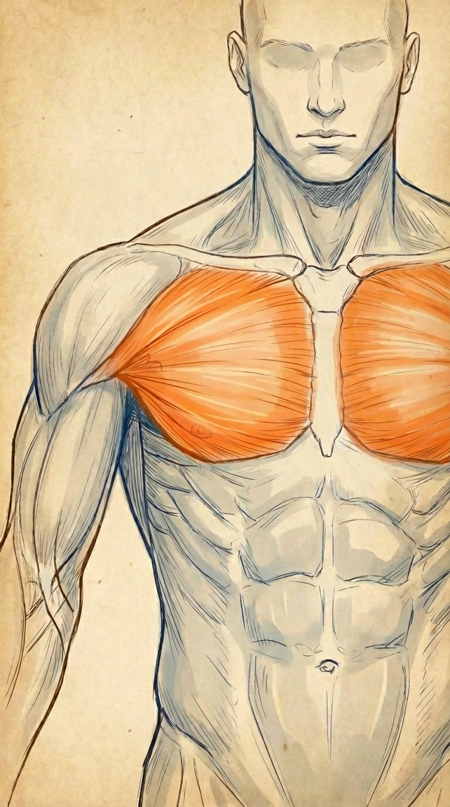
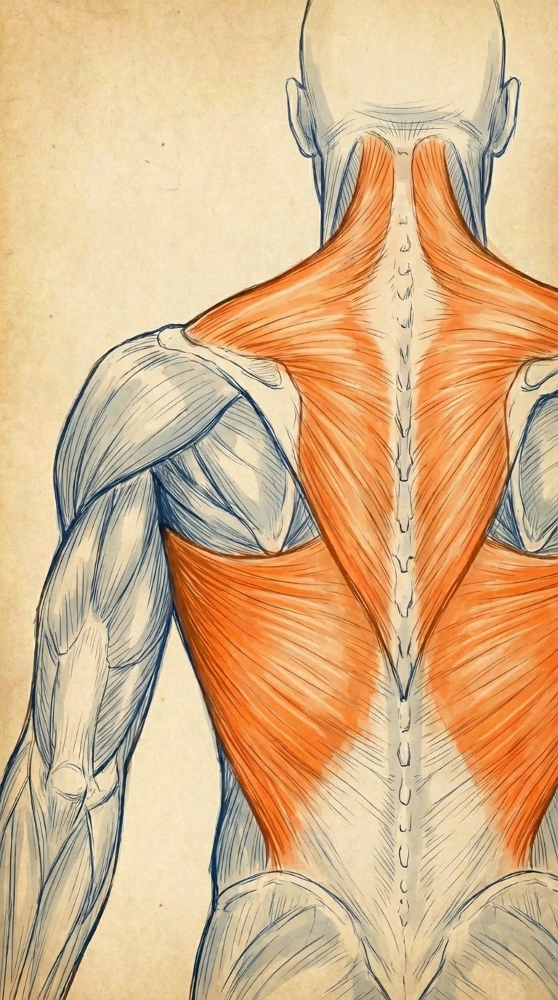
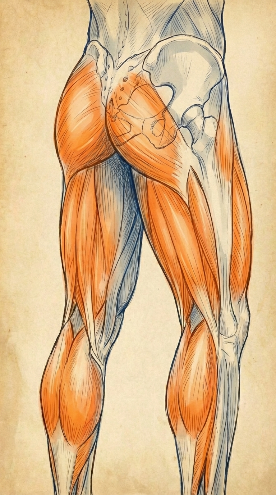
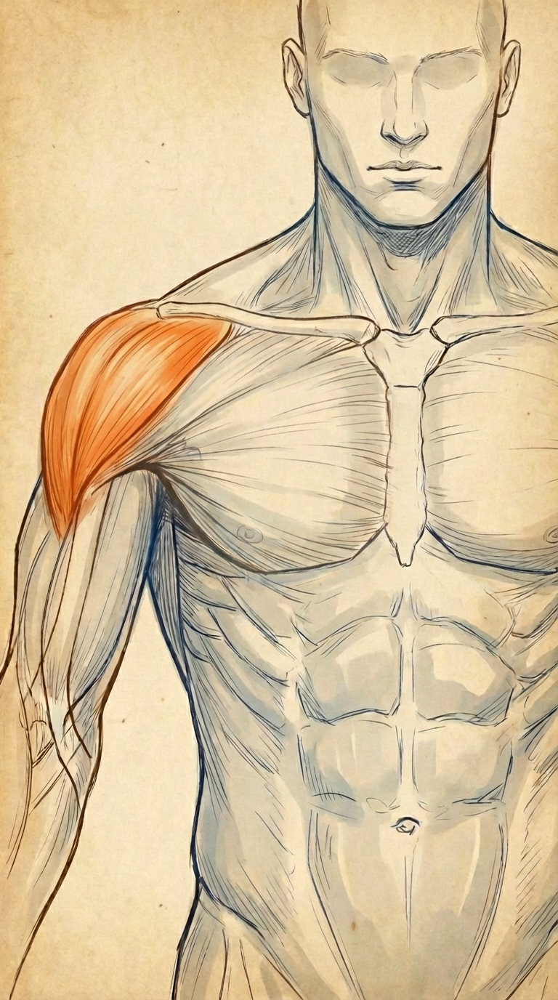
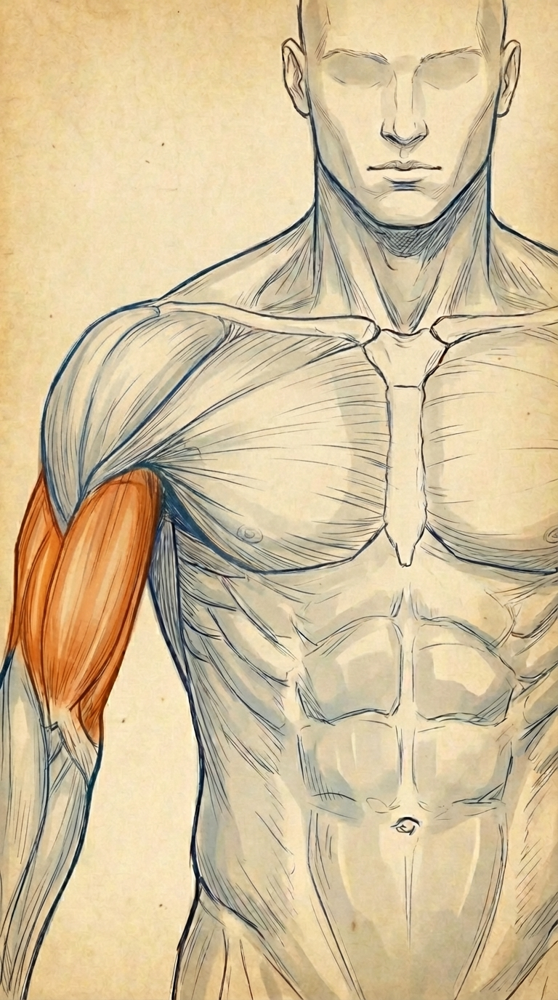
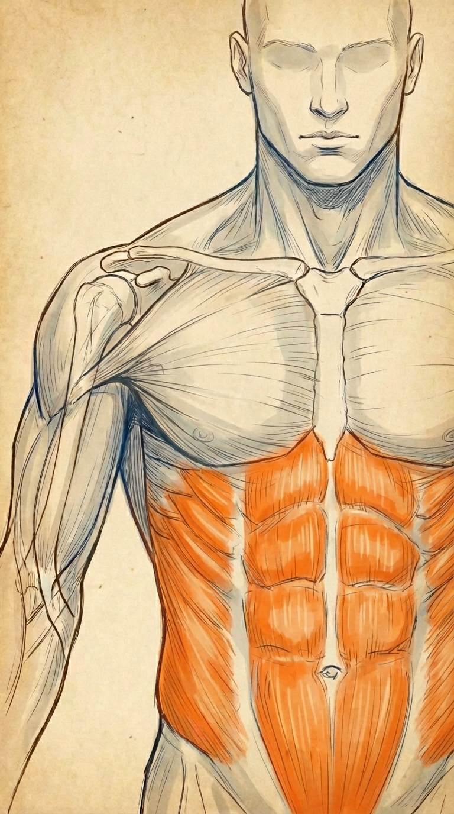

家トレ フォームチェッカー
あなたのフォームを家トレ専門コーチのダンが添削します！
部位を選択






背中
8種目 · 種目を選択してください
種目
撮影ガイド
斜めから撮影
種目を選んでください
全身が映る距離
明るい場所
体のラインが見える服
カメラは固定
動画をアップロード
動画をアップロード
MP4 / MOV · 1レップ以上含む動画
タップしてファイルを選択
解析を速くするため、動画は10秒以内・20MB以下を推奨します。長い動画は処理に1分以上かかる場合があります。
動画ファイル
動画を選び直す
ベントオーバーロウ
80
/ 100
フォームはほぼ正確です
2点の改善ポイントあり
フォームキャプチャ
解析が完了すると
修正ポイントが表示されます
修正ポイントが表示されます
フィードバック
伸展フェーズ
肘の軌道が安定しており、可動域を十分に活かせています。
中間フェーズ
背中がやや丸まっています。胸を張り、腰のアーチを意識しましょう。
収縮フェーズ
引き幅が十分で、肩甲骨の収縮が明確に確認できます。
もう一度チェックする
別の部位を選ぶ
記録
解析種目